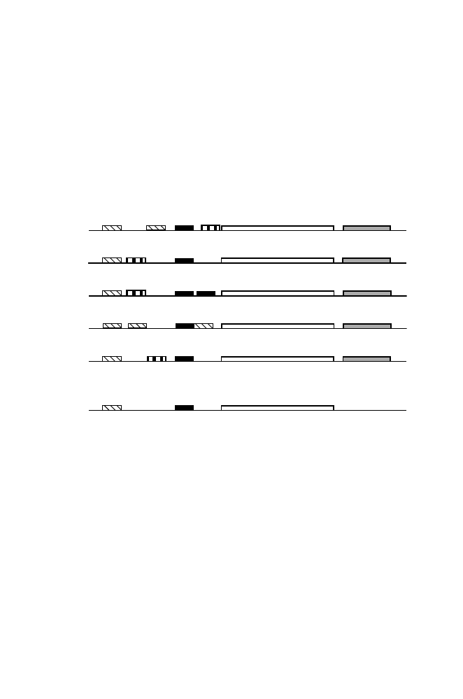

14.4 Gene Content
439
the motifs may be short and may display considerable sequence degeneracy at
positions within the sequence pattern. If we were to use PWMs to search for
regulatory sequences (Chapter 9), there would typically be a substantial false
positive error frequency. But with aligned genomic sequences, the regulatory
sequences become more apparent because of their conserved sequences and po-
sitions relative to the coding sequences. Identifying regulatory sequences by
comparing sequences from corresponding genomic regions of related organ-
isms is called
phylogenetic footprinting
(Gumucio et al., 1992; see Zhang
and Gerstein, 2003, for a review).
A
B
C
X
D
orfX
orfY
E
Consensus
geneX
X
X
X
Fig. 14.15.
Phylogenetic footprinting using related organisms A, B,. . . ,E. Open
boxes represent coding sequences, grey boxes represent untranslated ORFs, and
black or striped boxes represent candidate regulatory elements in orthologous gene
regions. “X” indicates a stop codon. In any one genome, it may be hard to determine
which regulatory elements are functional, but conserved elements shared by the
whole set most likely represent the actual functional elements. Similar logic can be
used to identify functional ORFs. Although orfY appears in A, its absence in the
other strains (note stop codons) suggests that it may not be functional.
The power of such methods is illustrated by the comparative study of
S.
cerevisiae
and three close relatives (Cliften et al., 2003; Kellis et al., 2003).
As we mentioned earlier, yeast gene identification is relatively easy, because
of the 6062 ORFs listed in the Saccharomyces Genome Database, only 240
were indicated to have one or more introns. Even with this simple genome, the
comparative genomic approach showed that about 500 of the approximately
6000 previously annotated “genes” were probably not genes at all. The phylo-
genetic footprinting approach identified 40 new regulatory motifs in addition
to many of the 55 regulatory motifs that had previously been identified (Kellis